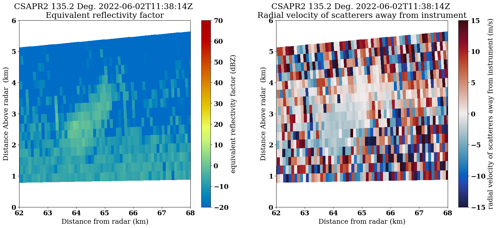
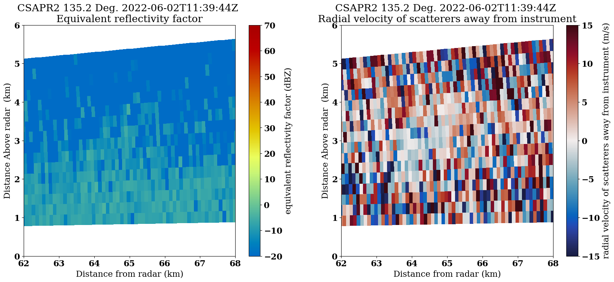
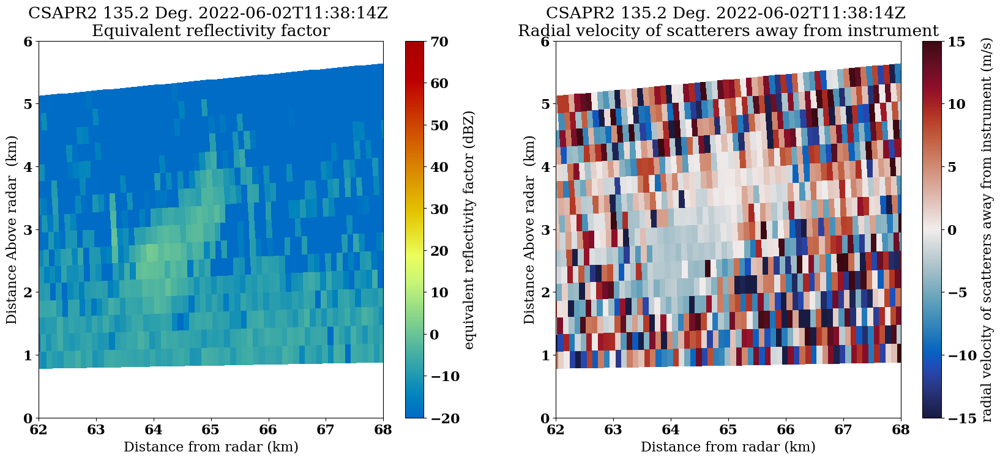
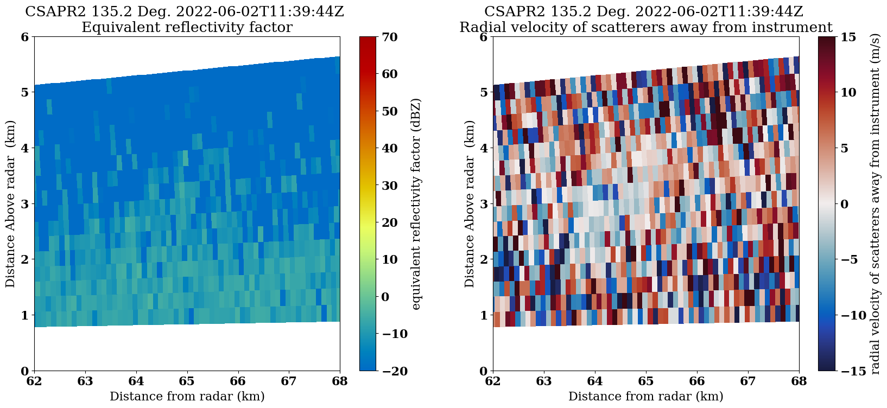
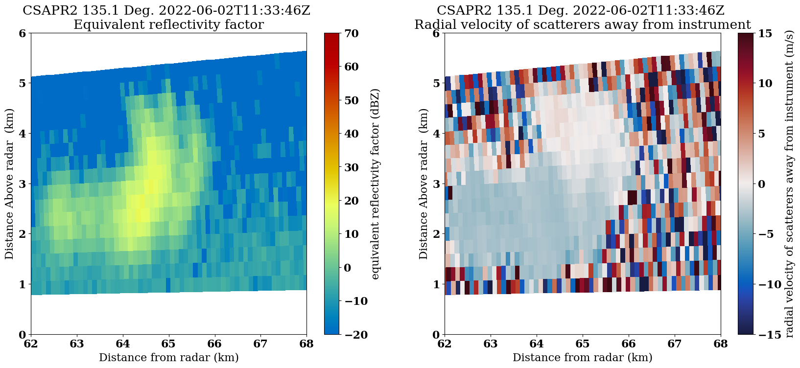
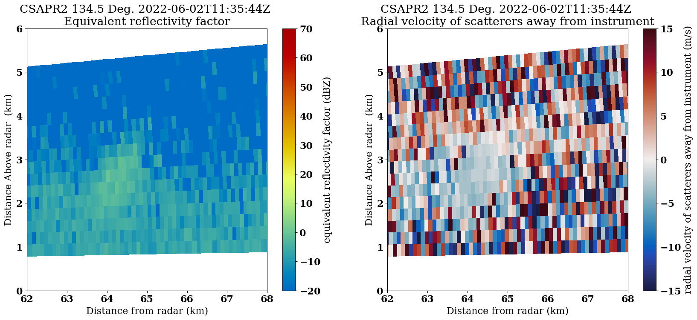
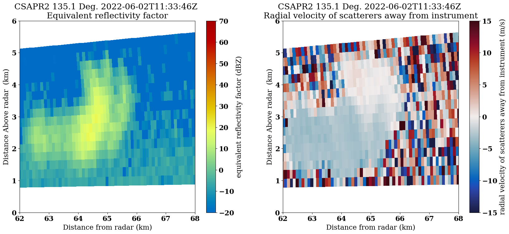
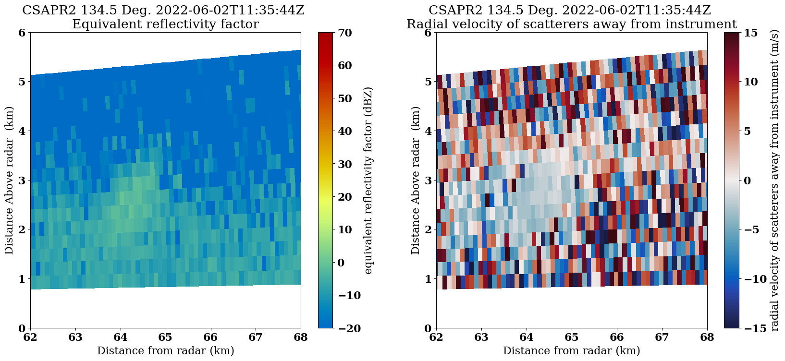

Plotting Data from a Field Campaign (TRACER)
Overview
Within this notebook, we will cover:
How to access data from the Atmospheric Radiation Measurment (ARM) user facility
How to setup a workflow to plot both cross sections (RHIs) and horizontal scans (PPIs)
Prerequisites
Concepts |
Importance |
Notes |
|---|---|---|
Required |
Basic plotting |
|
Required |
IO/Visualization |
Imports
import glob
import os
from pathlib import Path
import act
import imageio.v2 as imageio
import matplotlib
import matplotlib.pyplot as plt
import pyart
## You are using the Python ARM Radar Toolkit (Py-ART), an open source
## library for working with weather radar data. Py-ART is partly
## supported by the U.S. Department of Energy as part of the Atmospheric
## Radiation Measurement (ARM) Climate Research Facility, an Office of
## Science user facility.
##
## If you use this software to prepare a publication, please cite:
##
## JJ Helmus and SM Collis, JORS 2016, doi: 10.5334/jors.119
Grab Data from ARM
One of the better cases was from June 2, 2022, where several cold pools and single-cell storms traversed through the domain.
The Tracking Aerosol Convection Interactions ExpeRiment (TRACER) Field Campaign
Data is available from the Atmospheric Radiation Measurment user facility, which helped to lead the TRACER field campaign in Houston, Texas.
The data are available from the ARM data portal (https://adc.arm.gov/).
We are interested in the C-band radar, which is utilizing a cell-tracking algorithm, with the datastream
houcsapr2cfrS2.a1
Use the ARM Live API to Download the Data, using ACT
The Atmospheric Data Community Toolkit (ACT) has a helpful module to interface with the data server:
act.discovery.download_arm_data?
Setup our Download Query
Before downloading our data, we need to make sure we have an ARM Data Account, and ARM Live token. Both of these can be found using this link:
Once you sign up, you will see your token. Copy and replace that where we have arm_username and arm_password below.
arm_username = os.getenv("ARM_USERNAME")
arm_password = os.getenv("ARM_PASSWORD")
datastream = "houcsapr2cfrS2.a1"
start_date = "2022-06-02T11:30:00"
end_date = "2022-06-02T11:40:00"
print(len(arm_username), len(arm_password))
8 16
june2_csapr_files = act.discovery.download_arm_data(arm_username,
arm_password,
datastream,
start_date,
end_date,
)
[DOWNLOADING] houcsapr2cfrS2.a1.20220602.113023.nc
[DOWNLOADING] houcsapr2cfrS2.a1.20220602.113159.nc
[DOWNLOADING] houcsapr2cfrS2.a1.20220602.113246.nc
[DOWNLOADING] houcsapr2cfrS2.a1.20220602.113628.nc
[DOWNLOADING] houcsapr2cfrS2.a1.20220602.113645.nc
[DOWNLOADING] houcsapr2cfrS2.a1.20220602.113716.nc
[DOWNLOADING] houcsapr2cfrS2.a1.20220602.113929.nc
[DOWNLOADING] houcsapr2cfrS2.a1.20220602.113844.nc
[DOWNLOADING] houcsapr2cfrS2.a1.20220602.113858.nc
[DOWNLOADING] houcsapr2cfrS2.a1.20220602.113059.nc
[DOWNLOADING] houcsapr2cfrS2.a1.20220602.113215.nc
[DOWNLOADING] houcsapr2cfrS2.a1.20220602.113329.nc
[DOWNLOADING] houcsapr2cfrS2.a1.20220602.113128.nc
[DOWNLOADING] houcsapr2cfrS2.a1.20220602.113514.nc
[DOWNLOADING] houcsapr2cfrS2.a1.20220602.113400.nc
[DOWNLOADING] houcsapr2cfrS2.a1.20220602.113041.nc
[DOWNLOADING] houcsapr2cfrS2.a1.20220602.113115.nc
[DOWNLOADING] houcsapr2cfrS2.a1.20220602.113230.nc
[DOWNLOADING] houcsapr2cfrS2.a1.20220602.113258.nc
[DOWNLOADING] houcsapr2cfrS2.a1.20220602.113529.nc
[DOWNLOADING] houcsapr2cfrS2.a1.20220602.113459.nc
[DOWNLOADING] houcsapr2cfrS2.a1.20220602.113415.nc
[DOWNLOADING] houcsapr2cfrS2.a1.20220602.113557.nc
[DOWNLOADING] houcsapr2cfrS2.a1.20220602.113759.nc
[DOWNLOADING] houcsapr2cfrS2.a1.20220602.113700.nc
[DOWNLOADING] houcsapr2cfrS2.a1.20220602.113814.nc
[DOWNLOADING] houcsapr2cfrS2.a1.20220602.113944.nc
[DOWNLOADING] houcsapr2cfrS2.a1.20220602.113829.nc
[DOWNLOADING] houcsapr2cfrS2.a1.20220602.113346.nc
[DOWNLOADING] houcsapr2cfrS2.a1.20220602.113544.nc
[DOWNLOADING] houcsapr2cfrS2.a1.20220602.113428.nc
[DOWNLOADING] houcsapr2cfrS2.a1.20220602.113728.nc
If you use these data to prepare a publication, please cite:
Bharadwaj, N., Collis, S., Hardin, J., Isom, B., Lindenmaier, I., Matthews, A.,
Nelson, D., Feng, Y.-C., Rocque, M., Wendler, T., & Castro, V. C-Band Scanning
ARM Precipitation Radar (CSAPR2CFR). Atmospheric Radiation Measurement (ARM)
User Facility. https://doi.org/10.5439/1467901
Read in and Plot the Data
Before following running the next cells, make sure you have created the following directories:
quicklooks/ppiquicklooks/rhiquicklooks/vpt
!mkdir quicklooks
!mkdir quicklooks/rhi
!mkdir quicklooks/ppi
!mkdir quicklooks/vpt
mkdir: cannot create directory ‘quicklooks’: File exists
Loop through and plot
We read in the data, check the scan type, and plot a basic RadarDisplay which will automatically detect whether the plot is a vertical cross section (RHI or VPT), or a horizontal scan (PPI).
This offers a solid “quick look”, or initial visualization of the data.
for file in june2_csapr_files:
radar = pyart.io.read(file)
print(radar.scan_type)
display = pyart.graph.RadarDisplay(radar)
display.plot("reflectivity", 0)
plt.savefig(f"quicklooks/{radar.scan_type}/{Path(file).stem}.png", dpi=200)
plt.show()
plt.close()
rhi
/home/runner/miniconda3/envs/radar-cookbook-dev/lib/python3.11/site-packages/numpy/core/fromnumeric.py:771: UserWarning: Warning: 'partition' will ignore the 'mask' of the MaskedArray.
a.partition(kth, axis=axis, kind=kind, order=order)
rhi
rhi
rhi
rhi
rhi
rhi
rhi
ppi
rhi
rhi
rhi
ppi
rhi
rhi
rhi
rhi
rhi
ppi
rhi
rhi
rhi
ppi
rhi
rhi
rhi
rhi
rhi
rhi
rhi
ppi
ppi
Refine our Plot, Plot Velocity
Let’s focus on the vertical scans of the data, or the RHIs.
You’ll notice that we had some cells around 60 km from the radar, with the vertical axis less than 6 km.
Let’s reflect that in the plots!
Customize our plot look
Before we plot, we can change the size of our font, and style using the following parameters:
font = {'family' : 'serif',
'weight' : 'bold',
'size' : 16}
matplotlib.rc('font', **font)
Apply our Plotting Loop
We:
Check to see if the scan is an RHI
Plot the reflectivity on one subplot
Plot velocity on the other
Save our plots
for file in june2_csapr_files:
radar = pyart.io.read(file)
if radar.scan_type == 'rhi':
fig = plt.figure(figsize=(20,8))
display = pyart.graph.RadarDisplay(radar)
ax = plt.subplot(121)
display.plot("reflectivity",
0,
ax=ax,
vmin=-20,
vmax=70)
plt.xlim(62,68)
plt.ylim(0, 6)
ax2 = plt.subplot(122)
display.plot("mean_doppler_velocity",
0,
ax=ax2,
cmap='pyart_balance',
vmin=-15,
vmax=15)
plt.xlim(62,68)
plt.ylim(0, 6)
plt.savefig(f"quicklooks/{radar.scan_type}/{Path(file).stem}.png", dpi=200)
plt.show()
plt.close()
 



 



Create a GIF of teh RHI images
rhi_images = sorted(glob.glob("quicklooks/rhi/*"))
with imageio.get_writer('storm-animation.gif', mode='I') as writer:
for filename in rhi_images:
image = imageio.imread(filename)
writer.append_data(image)

Summary
Within this example, we walked through how to access ARM data from a field campaign in Texas, plot a quick look of the data, and refine our plots to investigate a storm!
What’s Next?
We will showcase other data workflow examples, including field campaigns in other regions and data access methods from other data centers.
Resources and References
CSAPR Radar Data:
Bharadwaj, N., Collis, S., Hardin, J., Isom, B., Lindenmaier, I., Matthews, A., & Nelson, D. C-Band Scanning ARM Precipitation Radar (CSAPR2CFR). Atmospheric Radiation Measurement (ARM) User Facility. https://doi.org/10.5439/1467901
Py-ART:
Helmus, J.J. & Collis, S.M., (2016). The Python ARM Radar Toolkit (Py-ART), a Library for Working with Weather Radar Data in the Python Programming Language. Journal of Open Research Software. 4(1), p.e25. DOI: http://doi.org/10.5334/jors.119
ACT:
Adam Theisen, Ken Kehoe, Zach Sherman, Bobby Jackson, Alyssa Sockol, Corey Godine, Max Grover, Jason Hemedinger, Jenni Kyrouac, Maxwell Levin, Michael Giansiracusa (2022). The Atmospheric Data Community Toolkit (ACT). Zenodo. DOI: https://doi.org/10.5281/zenodo.6712343